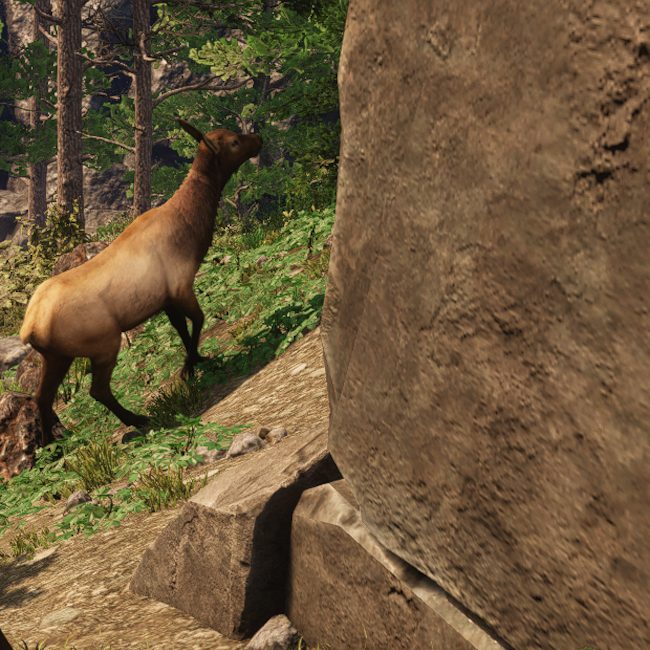
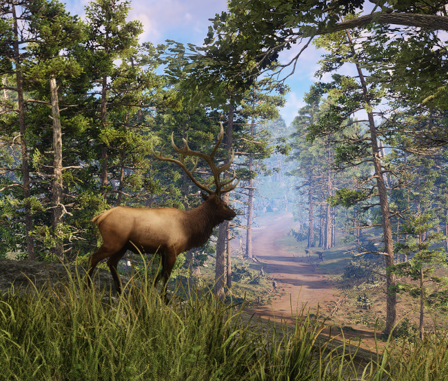
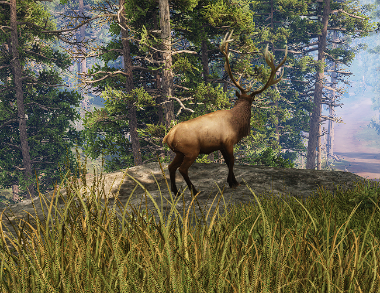

Os cervos são animais dóceis e ariscos, que são encontrados principalmente na divisa entre falésias do monarca e Guardaventos.
Além de seu couro, no caso dos machos, o chifre é aproveitado para decorações.
Sua carne é ótima para assados e ensopados, mas desde que seja feita por alguém capacitado.
